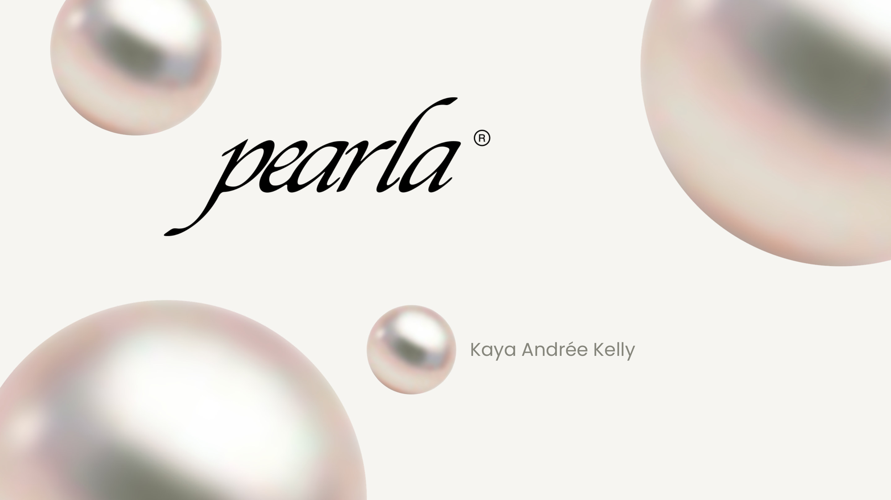
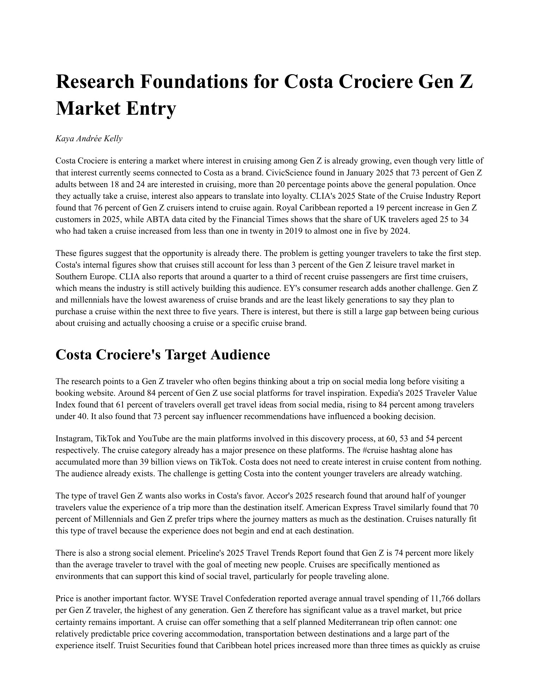

Scroll inside a phone to see the rest of that email.
Click a story to move to the next photo.
Every send follows the same four-part structure, adapted to each collection's story.
Hero
Opens with a limited colorway, one named piece, a tagline, or a destination name. Committing to one angle reads as curated, not a catalog dump.
Featured
Narrows the decision the shopper has to make, whether that's two colorways, one product in variants, or pieces shown both styled and standalone. Fewer choices, more clicks.
Editorial
Where the claim gets proven — through foundational pieces built into a capsule, a hero piece given room to carry the send, sets shown styled together as proof they work, cross-category styling to build a bigger basket, or destination mood to sell a lifestyle.
CTA
The hard sell already happened in the hero and editorial, so the ask itself should be the easiest moment.
Core philosophy
Reduce decision fatigue at every stage, use naming and styling rather than discounting to signal a premium, considered brand, and let each collection's unique story do the differentiating while the format stays consistent.
Click the deck to open it, then click through the slides.

Pearla is a brand I built around the idea that sustainability and individuality shouldn't be a trade-off — a premium accessories line made from recycled beads and ethically sourced fabrics, where every piece is one-of-one and digitally authenticated so its origin and ownership can't be faked.
The idea
Fast fashion has made accessories disposable and anonymous. Pearla transforms recycled materials into premium, artisanal pieces — each one verified with NFT-based authentication that proves its materials, provenance, and one-of-one status.
Who it's for
Millennials aged 30–45, Europe-based at launch, style-conscious and digitally native — consumers who want "quiet quality" over logo-driven luxury, and care about provenance, resale value, and community as much as design.
Business model
Direct-to-consumer first, expanding into selective pop-ups and flagship boutiques. A pre-order, made-to-order production model keeps inventory risk low and margins strong, positioned in the premium/bridge segment between mass brands and legacy luxury.
The edge
Blockchain-verified authenticity, one-of-one customization, and a community built around material reuse — an identity that's genuinely difficult for mass competitors to copy without breaking their own scale economics.
Click the deck to open it, then click through the slides. Hover the research paper to read it.
